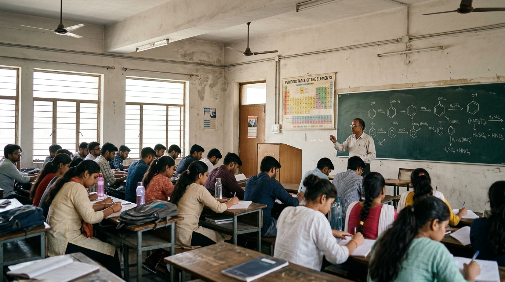
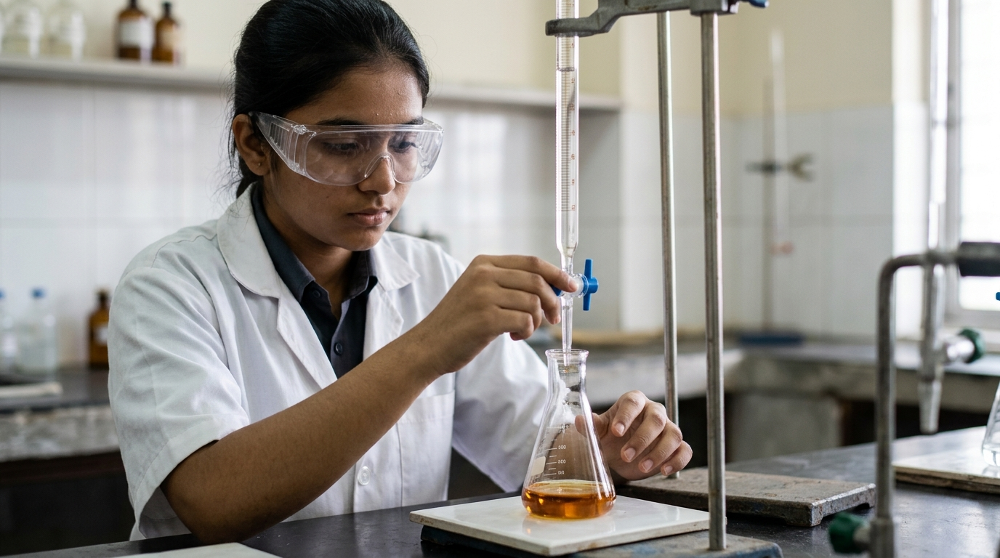
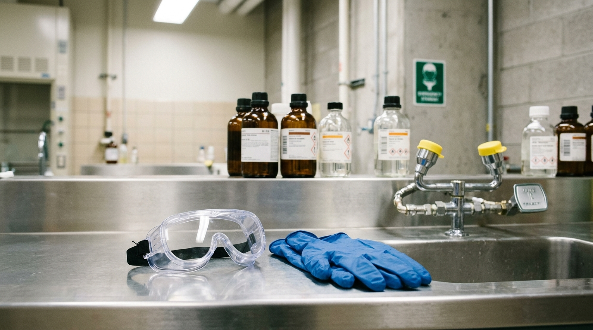

Concept-Based Chemistry Education
Chemistry in Intermediate education provides a profound bridge between the mathematical physics of atomic particles and the tangible materials composing our world.
The subject is structured across three core disciplines: Physical Chemistry (energetics, rates, and mathematical equilibria), Organic Chemistry (carbon reaction mechanisms, functional conversions, and synthetic pathways), and Inorganic Chemistry (periodic trends, coordination bonding, and elemental properties).

The Three Pillars of Intermediate Chemistry
Illustrative topics structured across Physical, Organic, and Inorganic branches.
Physical Chemistry
Theoretical & Math- Atomic Structure: Quantum numbers, orbitals, de Broglie relation, and Heisenberg principle.
- Chemical Bonding: VSEPR theory, hybridization, molecular orbital theory, and dipole moments.
- Thermodynamics: Enthalpy, entropy, Gibbs free energy, and spontaneity criteria.
- Chemical Equilibrium: Le Chatelier's principle, ionic equilibrium, pH calculations, and buffer solutions.
- Solutions & Colligative Properties: Raoult's law, elevation of boiling point, and osmotic pressure.
- Chemical Kinetics & Electrochemistry: Reaction rates, Arrhenius equation, galvanic cells, and Nernst equation.
Organic Chemistry
Carbon Chemistry- Hydrocarbons: Alkanes, alkenes, alkynes, and aromatic electrophilic substitution.
- Reaction Mechanisms: Carbocations, free radicals, Markovnikov rule, and inductive effects.
- Haloalkanes & Haloarenes: SN1 and SN2 nucleophilic substitution reactions.
- Alcohols, Phenols & Ethers: Dehydration mechanisms, acidic strength, and ether cleavage.
- Aldehydes, Ketones & Carboxylic Acids: Nucleophilic additions, Cannizzaro, and aldol condensation.
- Biomolecules: Carbohydrates, amino acids, peptide bonds, and vitamins.
Inorganic Chemistry
Elements & Crystals- Periodic Classification: Periodic trends in atomic radii, ionization enthalpy, and electronegativity.
- s-Block & p-Block Elements: Group trends, anomalous behaviors, oxides, and hydrides.
- d-Block & f-Block Elements: Transition metal characteristics, variable oxidation states, and catalytic actions.
- Coordination Compounds: Werner's theory, IUPAC nomenclature, crystal field theory, and isomerism.
- Principles of Metallurgy: Concentration of ores, roasting, calcination, and refining techniques.
- Environmental Chemistry: Atmospheric pollution, greenhouse effect, and water quality parameters.

Volumetric Titration & Qualitative Salt Analysis
In Intermediate chemistry practicals, accuracy and analytical patience are paramount. Students learn the classical art of volumetric titration using standardized acid-base and redox solutions.
Through systematic systematic testing, students also practice salt analysis—identifying cations and anions through flame tests, precipitation reactions, and confirmatory chemical assays, documenting their observations in structured laboratory records.
Laboratory Safety Awareness & Material Science
Student safety is the foundation of all chemistry laboratory sessions. Our curriculum instills awareness regarding chemical hazard classifications, proper use of protective eyewear and coats, fume extraction handling, and careful disposal of neutralizing reagents.
Furthermore, students explore how chemistry drives sustainable real-world applications—from clean battery electrolytes and pharmaceutical syntheses to biodegradable polymers and water treatment.

EXPERIENCE SCIENCE IN OUR SPECIALIZED LABS
Take an in-depth look at our dedicated Physics, Chemistry, and Mathematics Learning Laboratories.